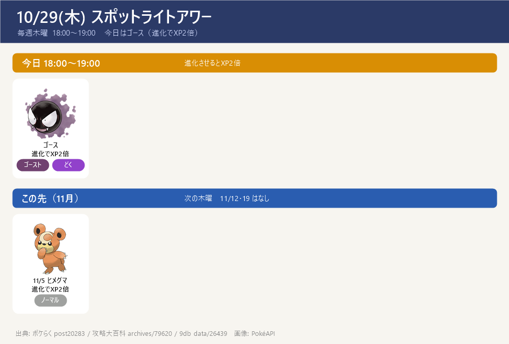
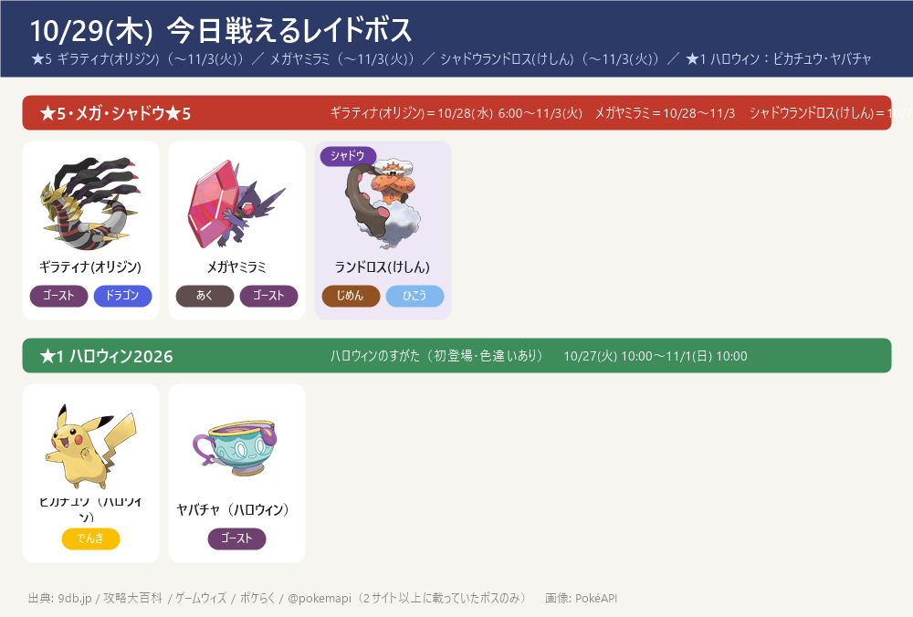
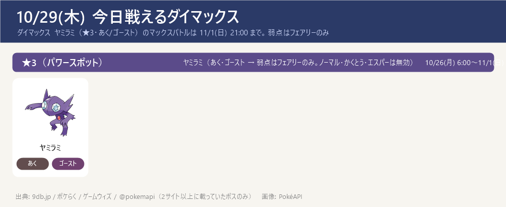
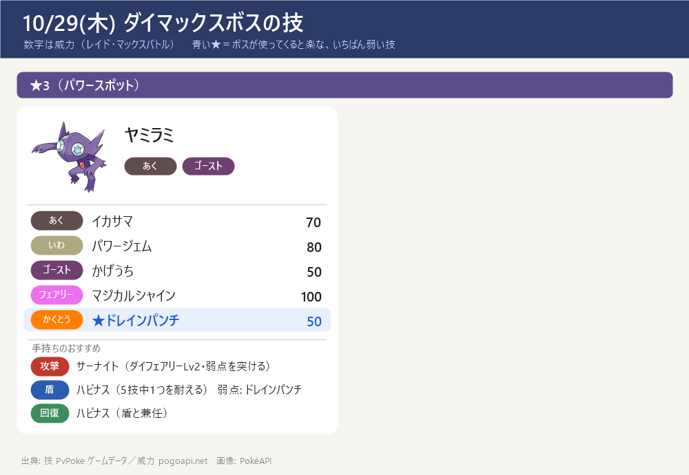

今日のポイント
- 【予約メモ】今日 18:00～19:00 はゴースのスポットライトアワー（ボーナスは進化XP2倍。アメが増えるボーナスではない）
- ゴースを捕まえるときは毎回パイルのみ（アメ2倍）＋おこう。いらないゴースは博士に送ってアメに
- ねらい：ゲンガー（CP2500・ダイホロウ Lv3）の強化用のアメ。トレーナーレベル31以上なら アメXL も出ることがある
- ★5 ギラティナ(オリジン) 開催中（〜11/3(火)）（ゴースト・ドラゴン）。弱点はこおり・ゴースト・ドラゴン・あく・フェアリー（二重弱点なし）。色違いあり。※10/28(水) のレイドアワーは終了
- メガヤミラミのメガレイドも開催中（〜11/3(火)）。あく・ゴースト → 弱点はフェアリーのみ。メガエナジー稼ぎに（終了日はサイト差あり：一部サイトは11/8とする → ゲーム内で確認を）
- ダイマックス ヤミラミ（★3・あく/ゴースト）のマックスバトルは 11/1(日) 21:00 まで。弱点はフェアリーのみ（ノーマル・かくとう・エスパー技は無効）。攻撃はサーナイト（ダイフェアリーLv2）、盾はハピナス。参加に400MP
- ハロウィン2026 パート1 開催中（〜11/1(日) 10:00）、続けてパート2 11/1(日)10:00〜11/5(木)20:00。野生にズバット（トップハット・初登場）・ヨマワル・ポッチャマ・フワライドなどハロウィンのすがた（色違いあり）。くわしくは下の「ハロウィン2026」の枠へ
- この先：10/31(土) 14:00〜17:00 スーパーメガレイドデイ：メガシャンデラ（初登場）。無料レイドパス6枚＋前日分で最大7枚、色違いあり。ほのお・ゴースト → 弱点はみず・あく・じめん・いわ・ゴースト・ドラゴン。場所が限られる特別なメガレイド
- 【締切近い】GOパス10月のポイント獲得は 11/3(火) 10:00 まで（報酬の受け取りは 11/5(木) 10:00 まで）。デラックスのキラチャーム使用期限は 11/8(日) 23:59
- 11/14(土) ダイマックス ディアルガに向けて強化を進める：カイリキー（カウンター）・ドリュウズ（マッドショット）・受けのメタグロス。マックス技の強化は 次はドリュウズ（ダイアース Lv1→Lv2）（サーナイトのダイフェアリーLv2は完了）。くわしくはダイマックス育成順ページ
東京の巣：東京の巣 10/22(木)〜11/5(木)（別ページ）
スポットライトアワー

- 今日 18:00〜19:00 はゴース。ボーナスはポケモンを進化させたときのXP（経験値）2倍（捕獲アメやすなが増えるボーナスではない）
- 活かし方：あらかじめアメを貯めておき、18:00〜19:00 にゴース→ゴースト→ゲンガーなど進化をまとめて行う。しあわせタマゴを併用するとさらにXPが稼げる
- ゲンガー（CP2500・ダイホロウ Lv3）の強化用のアメ集めには、ゴースを捕まえるときにパイルのみ（アメ2倍）＋おこう。色違いゴースのチャンスもあり
- この先：11/5(木) は魔女の帽子をかぶったヒメグマ（進化でXP2倍）。11/12・11/19 はスポットライトアワーの開催なし、11/26(木) はオンバット（捕獲アメ2倍）
今日戦えるレイドボス
★5 ギラティナ(オリジン)（〜11/3(火)）／ メガヤミラミ（〜11/3(火)）／ シャドウランドロス(けしん)（〜11/3(火)）／ ★1 ハロウィン：ピカチュウ・ヤバチャ
- ★5 ギラティナ(オリジン)（ゴースト・ドラゴン）は 10/28(水) 6:00〜11/3(火)。弱点はこおり・ゴースト・ドラゴン・あく・フェアリー（すべて1.6倍・二重弱点なし）。色違いあり。※10/28(水) のレイドアワーは終了
- メガヤミラミ（あく・ゴースト）→ 弱点はフェアリーのみ。終了日は9db・攻略大百科・ゲームウィズで 11/3(火) だが、一部サイトは 11/8(日) とする差あり → ゲーム内で確認を（当ノートは複数サイト一致の 11/3 を採用）
- ★1のハロウィン ピカチュウ（ハット&ケープ）・ヤバチャ（リボン）は 10/27(火) 10:00 から登場（どちらも色違いあり・初登場）。〜11/1(日) 10:00
- ★3（通常レイド）とシャドウ★3/★1 は 2サイトで一致する確定情報が無い → 当日ゲーム内で確認を（下の「サイトで違っていた点」）

今日戦えるダイマックス
ダイマックス ヤミラミ（★3・あく/ゴースト）のマックスバトルは 11/1(日) 21:00 まで。弱点はフェアリーのみ
- ダイマックス ヤミラミ（★3）のマックスバトルは 10/26(月) 6:00〜11/1(日) 21:00（ポケらく・ゲームウィズ）。参加に400MP。11/2(月)からはワンリキーに入れ替わり（マックスマンデー 11/2）
- ヤミラミは あく・ゴースト → 弱点はフェアリーのみ（ノーマル・かくとう・エスパー技は無効）。攻撃はサーナイト（ダイフェアリー Lv2）でフェアリーを突く。盾はハピナス（ノーマルなのでゴースト技が無効・HPで受ける）。※メタグロスはエスパーで あく・ゴースト技が2倍なので受けには使わない
- 今パワースポットに出ている★1〜★3のまとめ：今出ているダイマックスまとめを開く（★1〜★3の一覧・この後の予定）
- ダイマックス ヤミラミのくわしい攻略（受け役カード・パターン別の作戦・ソロ/人数の目安・育成価値）：攻略ページを開く
- 【各ボスのスペシャルアタック候補】（下のカード。数字はレイド・マックスバトルでの威力。★＝ボスが使ってくると楽な、いちばん弱い技（ボスと同じタイプの技は1.2倍で計算。こちらのポケモンとの相性は見ていない）。戦闘中に技名が出たら受け役を合わせる）


ハロウィン2026 パート1（開催中）
- 期間：パート1 10/27(火) 10:00〜11/1(日) 10:00。続けてパート2 11/1(日) 10:00〜11/5(木) 20:00（ゲームウィズ・ポケらく一致。攻略大百科の一覧表はパート1を10/31(土)20:00までと表記する差あり）
- 野生で増える：ズバット（トップハット・初登場）・ヨマワル・ポッチャマ・フワライド など（ハロウィンのすがた。色違い対応あり＝ポケらく表記）
- レイド★1（初登場）：ピカチュウ（ハット&ケープ姿）・ヤバチャ（リボン姿）。どちらも色違いあり
- 無料タイムチャレンジ：クリアで ふしぎなアメ×6＋コスチュームピカチュウ
- ボーナス（GOパス連動）：ランク10到達で捕獲時のアメ2倍（デラックスは3倍）、ランク20到達で捕獲時のほしのすな2倍（デラックスは3倍）
- 色違い初登場：コスチュームの ピカチュウ・ズバット・ヤバチャ の3種（色違いボチはパート2で初登場＝ポケらくのみ）
サカキ対策（シャドウゼクロム）：攻略ページへ（別ページ）
締め切り・やること：まとめページへ（別ページ）
この先の予定（タップで開閉）
- 10/31(土) 14:00〜17:00 スーパーメガレイドデイ：メガシャンデラ（初登場・色違いあり。無料レイドパス6枚＋前日分で最大7枚、有料チケットで最大14枚）。グローバルチャレンジ 10/31 9:00〜11/1 12:00、リモートレイド上限20回
- 11/1(日) 10:00〜11/5(木) 20:00 ハロウィン2026 パート2
- 11/1(日) 21:00 ダイマックス ヤミラミ 終了 ／ 11/2(月)〜11/8(日) ダイマックス ワンリキー（マックスマンデー 11/2）
- 11/3(火) 10:00 GOパス10月のポイント獲得終了 ／ 11/5(木) 10:00 報酬受け取り終了 ／ ★5 ギラティナ(オリジン)・メガヤミラミ・シャドウランドロス(けしん) 終了（11/4(水)〜 ギラティナ(アナザー)）
- 11/5(木) 18:00〜19:00 スポットライトアワー：魔女の帽子をかぶったヒメグマ（進化でXP2倍）
- 11/8(日) 23:59 GOパス10月デラックスのキラチャーム使用期限
- 11/9(月) 10:00〜 ワイルドエリア Into the Wild（攻略大百科・ゲームウィズでは「ワイルドウィーク」）開始（〜11/13(金) 20:00）：王の姿のザシアン・ザマゼンタの ★5 レイド。18:00〜19:00 レイドアワーはザシアン。GOパス デラックスを最後までクリアで ぎんのおうかん（ザシアンの攻撃特訓用）。ポイント獲得は 11/15(日) 18:00 まで
- 11/10(火) 18:00〜19:00 レイドアワー：ザマゼンタ（王の姿にする ★5 レイド）
- 11/13(金) 20:00 ワイルドエリア Into the Wild 終了（ザマゼンタを王の姿にするのは今日まで）
- 11/14(土)・15(日) GOワイルドエリア：グローバル（ダイマックス ディアルガ・パルキア）→ ボス別の攻略ページ・育成順ページ作成済み（GitHub にも公開）
- 11/15(日) 18:00 GOパス（Into the Wild デラックス）のポイント獲得終了 → ぎんのおうかん確保。報酬の受け取りは 11/17(火) 23:59、ぎんのおうかんの使用は 11/22(日) 23:59 まで
サイトで違っていた点（タップで開閉）
- ★5 ギラティナ(オリジン) の終了時刻: 10/28(水) 6:00 開始・11/3(火) 終了は各サイト一致。終了時刻は 9db 21:00／@pokemapi・ゲームウィズ 21:30／GBL Note 22:00 と食い違う → ゲーム内で確認を
- メガヤミラミ（メガレイド）の終了日: 開始 10/28(水) 6:00 は一致。終了は9db・攻略大百科・ゲームウィズ・@pokemapi で 11/3(火) だが、一部サイトは 11/8(日) とする差あり → ゲーム内で確認を（当ノートは複数サイト一致の 11/3 を採用）
- ハロウィン2026 パート1の終了: ゲームウィズ・ポケらく・@pokemapi は 11/1(日) 10:00 で一致。攻略大百科の今月イベント一覧表は 10/31(土) 20:00 までと表記する差あり → 当ノートは複数サイト一致の 11/1(日) 10:00 を採用
- ハロウィンの野生の顔ぶれ: 共通はズバット（初登場）・ヨマワル・ポッチャマ・フワライド（攻略大百科・ポケらく）。それ以外の細かい顔ぶれは表記差 → ゲーム内で確認を。色違いボチはパート2で初登場（ポケらくのみ）
- 通常レイド★3（デスカーンなど）とシャドウ★3/★1: ゲームウィズに記載はあるが 2サイトで一致する確定情報が無い → 当日ゲーム内で確認を。★1〜★3のダイマックスのまとめは /topics/dmax-now/ 参照
- マックスバトル ヤミラミの時間表記: ポケらく・ゲームウィズ・@pokemapi は 10/26(月) 6:00〜11/1(日) 21:00 で一致。11/2(月)からはワンリキー（〜11/8）に入れ替わり
- スポットライトアワー（ゴース）: 9db・ポケらく・攻略大百科・@pokemapi で 10/29(木) 18:00〜19:00・進化時XP2倍 で一致（確定）
- キラチャームの期限: 攻略大百科・ゲームウィズで 11/8(日) 23:59 まで で一致（確定）。GOパスのポイント獲得終了 11/3(火) 10:00・報酬受け取り 11/5(木) 10:00 も一致
- ダイマックスボスの技候補はゲームデータ(PvPoke)から（おんがえし・やつあたりは除外）、威力は pogoapi.net
出典: 9db.jp/pokemongo（開催イベント一覧 data/4351・ギラティナ(オリジン) data/26421・スポットライトアワー ゴース data/26439・マックスバトル日程 data/20859）／pokemon.gamepedia.jp/go（攻略大百科 今月のイベント archives/77843・10月レイド/マックス archives/120115・メガシャンデラ archives/120434）／pokemongo.gamewith.jp（11月スケジュール show/583244・メガシャンデラ show/582648）／pokemongo-raku.com（マックスバトル出現 post95707・スポットライトアワー post20283・11月まとめ post164974）／pokemongo-get.com（@pokemapi 開催中/開催予定 pokego02416）／gblnote.com（ゴース/ギラティナ攻略）／pvpoke.com ゲームデータ（技候補）
画像: PokéAPI ／ 2サイト以上で一致した情報だけを載せています